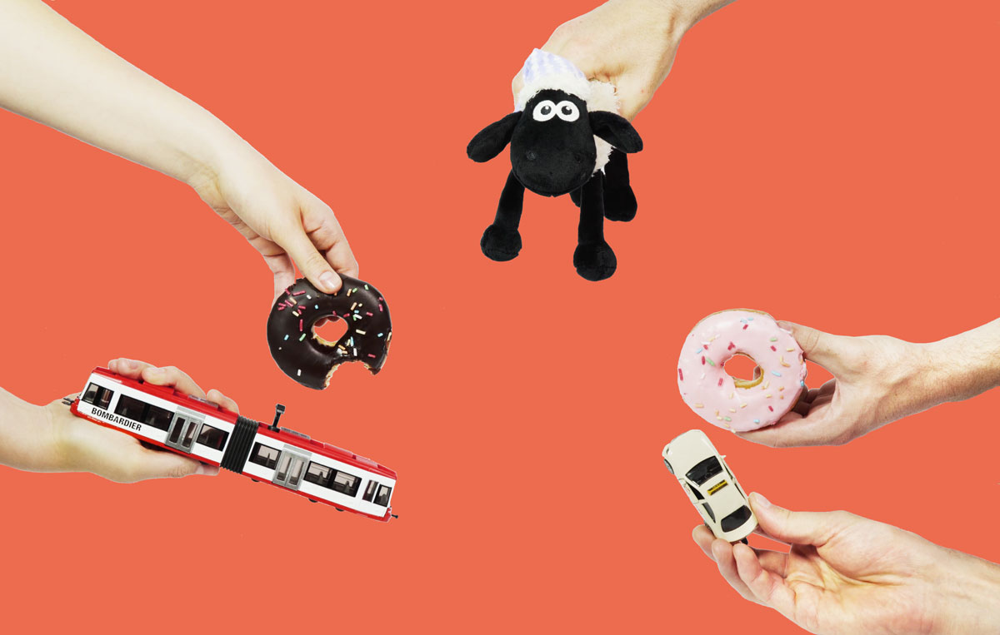
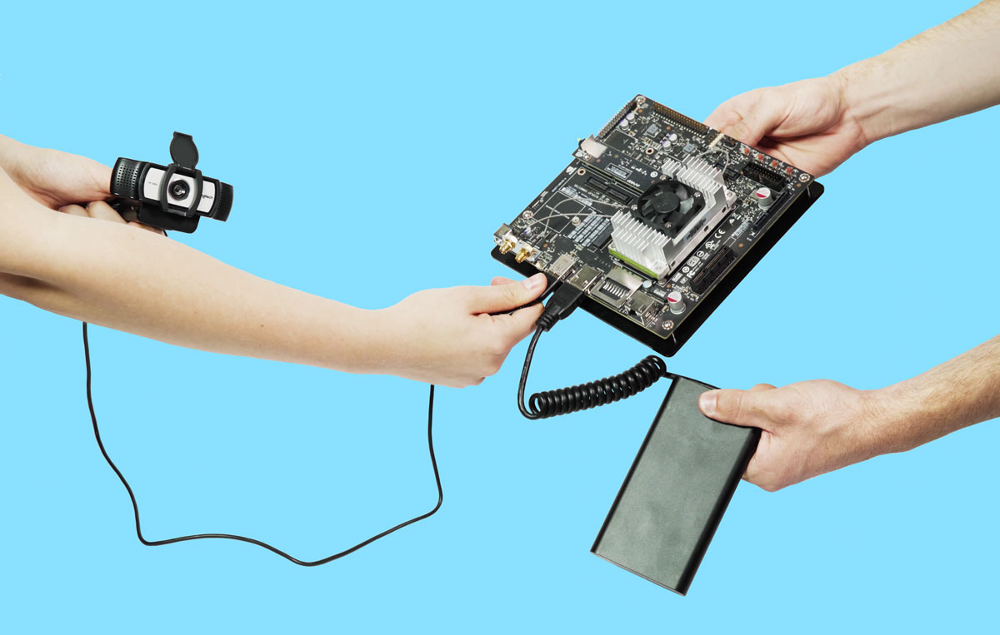
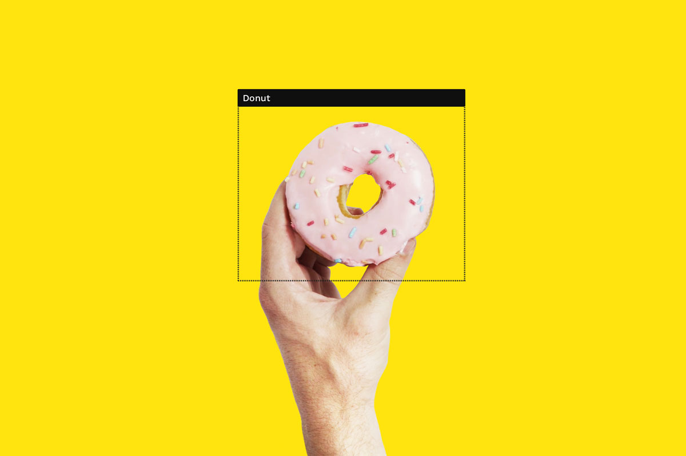
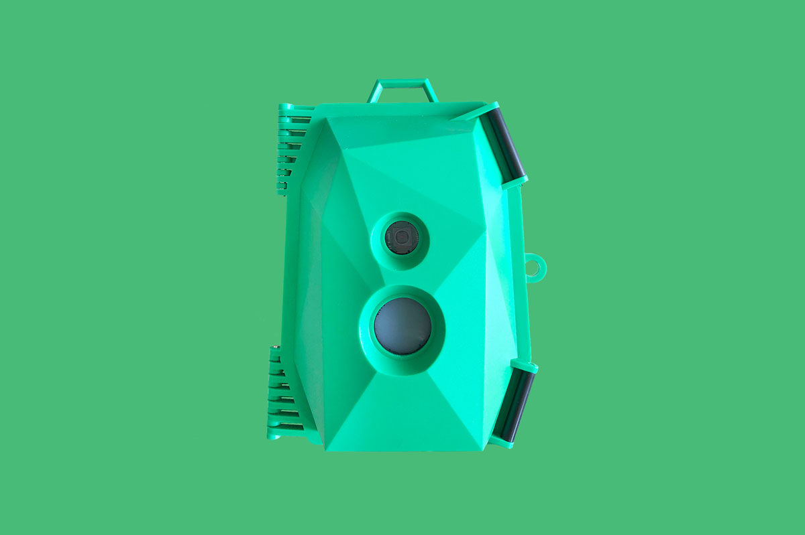
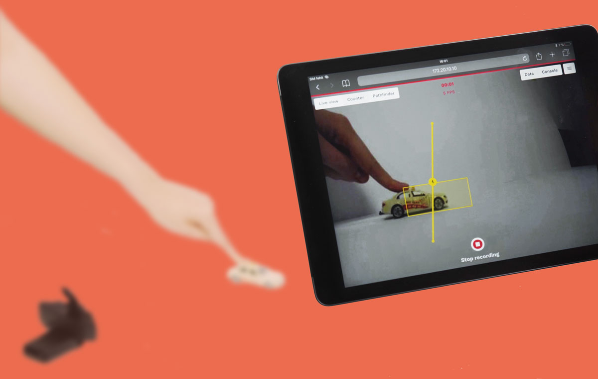
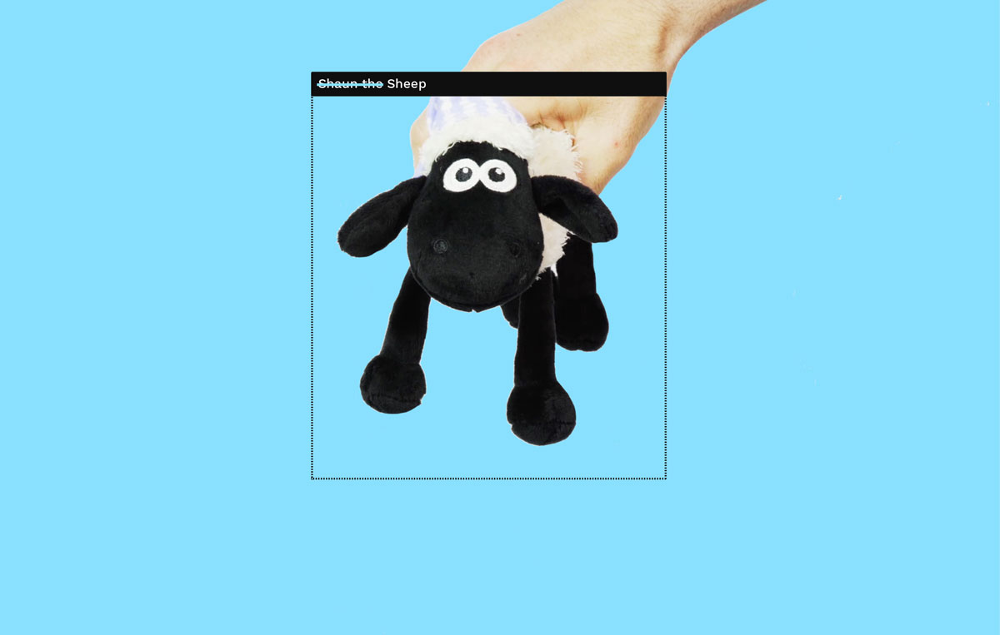
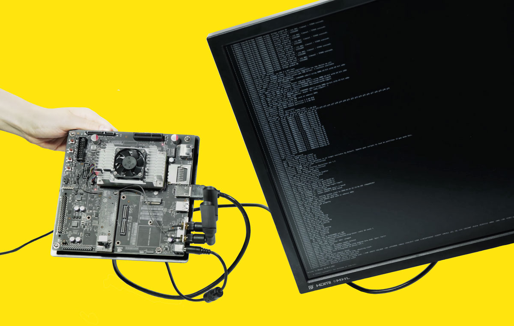

'OpenDataCam' is a tool that helps to quantify the world. It’s here for everyone to use! With computer vision OpenDataCam understands and quantifies moving objects. The simple setup allows everybody to become an urban data miner.

How can OpenDataCam see?
OpenDataCam consists of a camera attached to a mini computer. It’s running an object detection algorithm that counts and tracks moving objects. The board is equipped with a GPU (graphical processing unit), which allows it to process many parallel image threads at once. The perfect tool for image analysis and video processing.

Yolo
On the software side OpenDataCam is running YOLO — an object detection library. YOLO is trained to detect objects in images. The attached camera feeds YOLO with a video, YOLO then outputs all objects in each frame.

Housing
OpenDataCam is not tied to a specific housing, instead you can design your own or use an already existing casing. We used the Wildlife Cam Casing by Naturbytes to protect the hardware in the wild. Have a look at this tutorial to see how the set up the the Jetson NANO in the Wildlife Cam Casing.

App demo
Features
You own the data!
OpenDataCam is not connected to the cloud, you’re in full control of when to gather it. Via the interface you can specify which areas of the picture objects should be counted. Also the camera tracks how things move through the frames. Via an easy export function you can access the tally and traces and use it in any thinkable way. Going all-in? Use the API to get access to the raw data points.

Ethics
Transparency
The discussion around the use of artificial intelligence in public space is ongoing. We believe OpenDataCam is a contribution to this discussion, as it offers an offline, transparent, thus privacy respecting alternative. Paramount to the open source access is the responsible use of this technology we request from every user.

Privacy
As OpenDataCam is an experimental prototype with public facing applications, privacy is something we tried to bake into the design of the tool. After getting in touch with Sensor Labs privacy label, we’re currently finding ways to apply the label to OpenDataCam.

OpenDataCam in the Wild
After publishing the alpha version, we asked people what they did with it. These selected cases are here to show you what you can do with OpenDataCam.
Let us know about how you use OpenDataCam. Apart from that we also think OpenDataCam would be great to…Profiling in spaces like shops, train, stations, drones...
We’ve designed and tested OpenDataCam on a few different hardware setups. These are the ones we we suggest you to use. Please share us your setups and best practices.
Please note, we are not (re)selling or affiliated with the hardware. Check your local IoT retailer for best availability.
As you know, OpenDataCam is an open source and non commercial project. Please use this Repo to report bugs, request features, push your fixes and get in touch with the community.